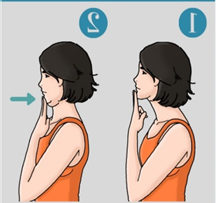
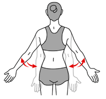

Headache
A headache is pain or discomfort in the head or face area. Types of
headaches include migraine, tension, and cluster. Headaches can be primary
or secondary. If it is secondary, it is caused by another condition.
Avoiding headache triggers is the best prevention.
Symptoms
- Pain usually on one side of your head, but often on both sides.
- Pain that throbs or pulses.
- Sensitivity to light, sound, and sometimes smell and touch.
- Nausea and vomiting.
Exercises

Chin tucks
Upper trapezious stretch
cat cow strech

Scapular Retraction
Foods to include
-
Hydrating Foods:Water-rich foods like cucumbers, celery, and melons
can help maintain hydration, which is important for headache prevention.
- Leafy Greens: Spinach, kale, and other greens are high in magnesium, which can help prevent and relieve headaches.
- Fatty Fish: Salmon, mackerel, and sardines provide omega-3 fatty acids that have anti-inflammatory properties and can help reduce the frequency and severity of headaches.
- Nuts and Seeds: Almonds, chia seeds, and flaxseeds are good sources of magnesium and can help prevent headaches.
- Whole Grains: Oats, quinoa, and brown rice provide steady energy and can help avoid blood sugar fluctuations that might trigger headaches.
- Fruits: Berries, bananas, and apples provide essential vitamins and minerals and can help maintain blood sugar levels.
- Herbal Teas: Ginger, peppermint, and chamomile teas can have soothing effects and help reduce headache symptoms.
Foods To avoid
- Processed Meats: Foods like bacon, sausages, and deli meats contain nitrates and can be headache triggers for some people.
- Aged Cheeses: Cheeses like cheddar and blue cheese can contain tyramine, which might trigger headaches.
- Alcohol: Red wine and other alcoholic beverages can dehydrate you and are common headache triggers.
- Caffeinated Beverages: While caffeine can sometimes help with headaches, excessive consumption or withdrawal from caffeine can lead to headaches.
- Sugary Foods: High sugar intake can cause blood sugar spikes and crashes, which may trigger headaches.
- Foods with Artificial Additives: Preservatives, artificial sweeteners (like aspartame), and other additives can sometimes be headache triggers.
- High-Sodium Foods: Processed and fast foods high in sodium can lead to dehydration and might exacerbate headache symptoms.